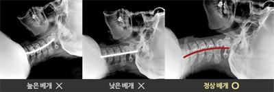

수면의 질(質)을 높이다. 가누다
가누다는 바른자세와 수면은 건강에 중요한 요소라는 기본
철학을 가지고 수면의 질을 높이기 위해 오랜시간 연구 끝에
개발된 제품입니다.
'도수기법' 베개
도수기법의 장점을 제품에 적용하여, 깊은 숙면을 유도하는 인체 공학적 디자인으로 설계하였습니다.
베개의 구조적 혁신
가누다 제품은 국내 특허 등록을 완료했으며, 해외에서도 특히 등록 및 출원된 제품입니다.
당신의 자세는 어떤가요 ?

신체적 고통을 다른 곳에서 찾고 있으세요?
목이 가장 편안한 자세를 취할 때 경추는 C자형처럼 곡선을 나타내며 이 때, 목의 인대에 가장 무리가 가지 않는 자세가 됩니다. 가누다 베개는 바른 체형의 형상을 오랫동안 안정적으로 지지해 줍니다.